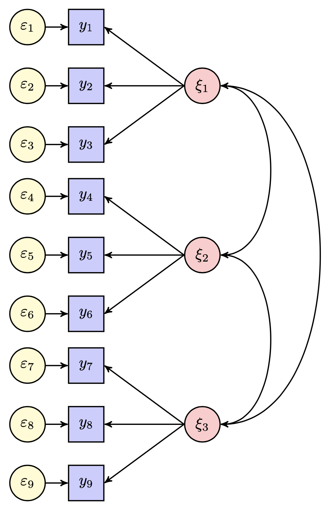
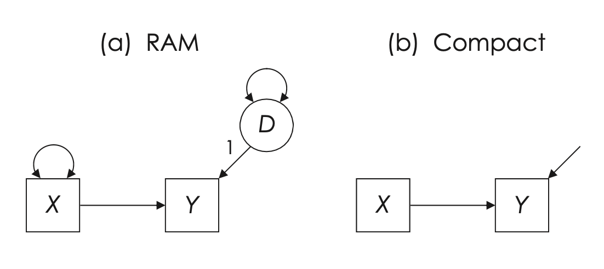
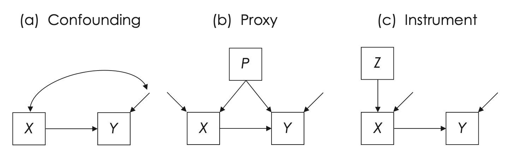
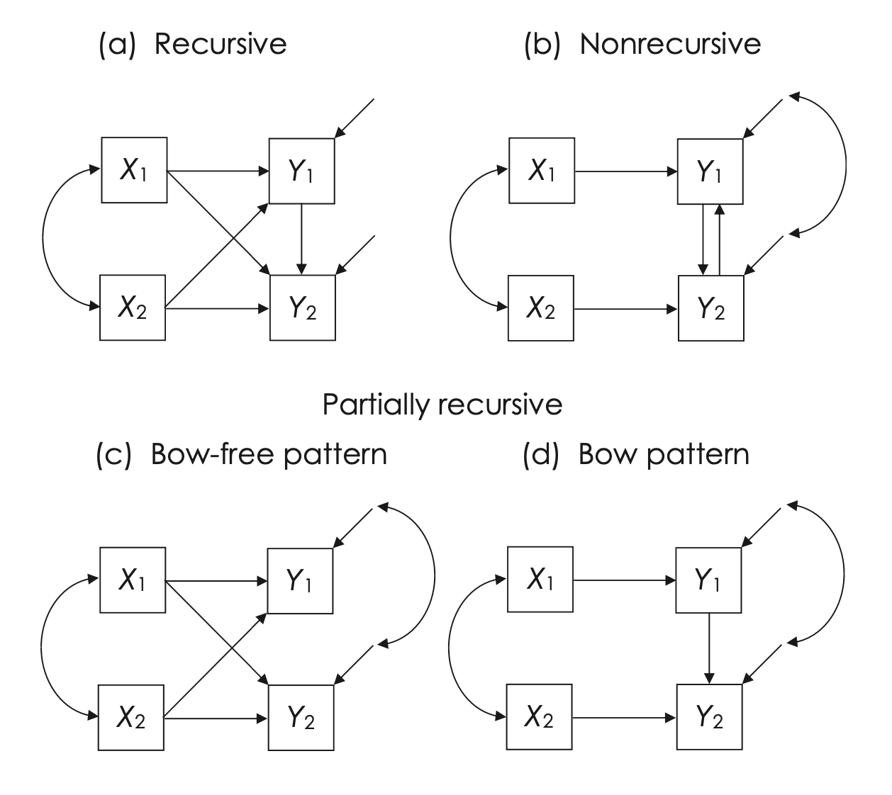
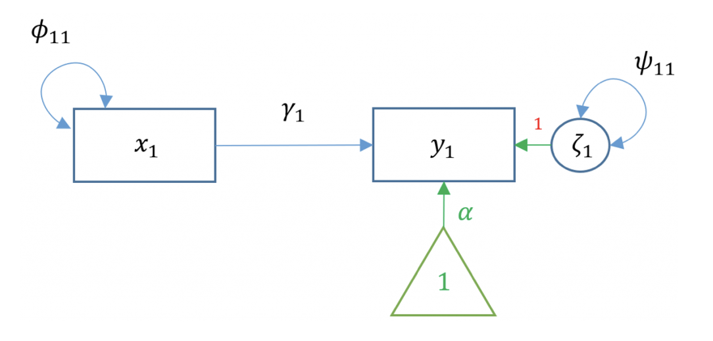
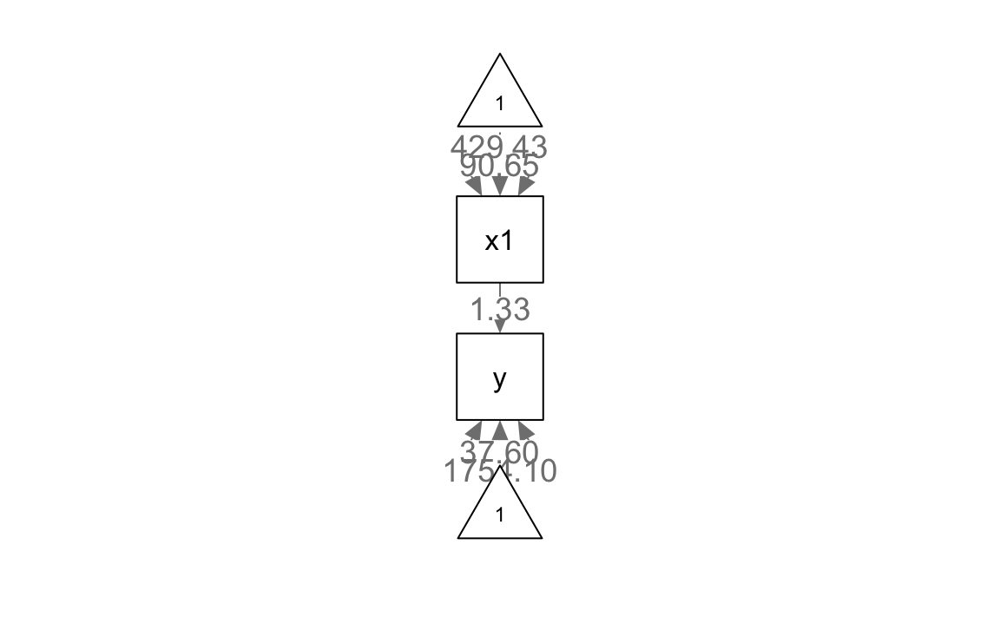
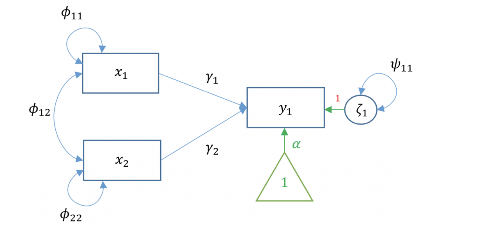
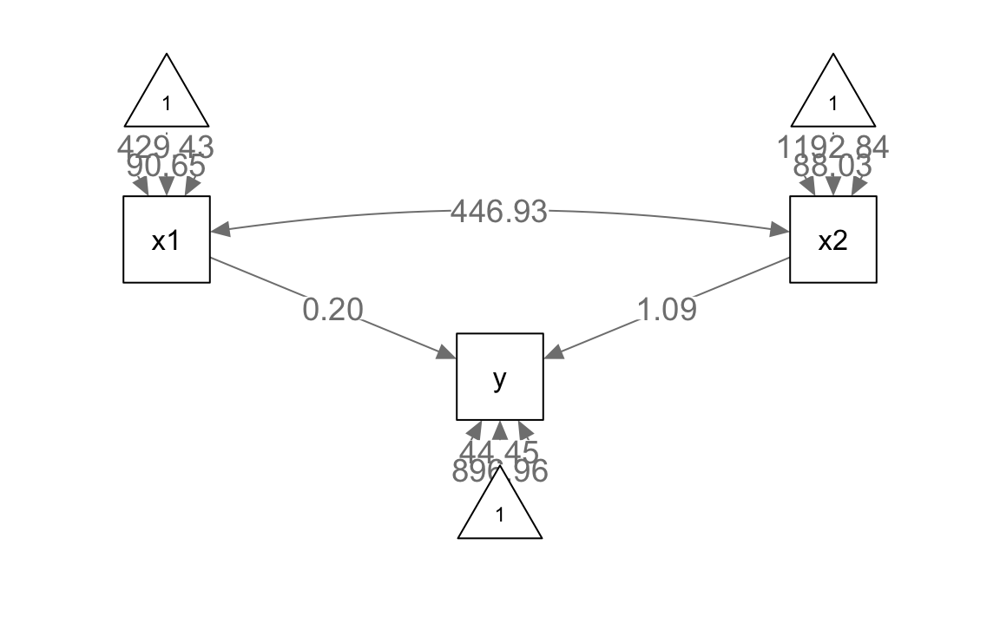
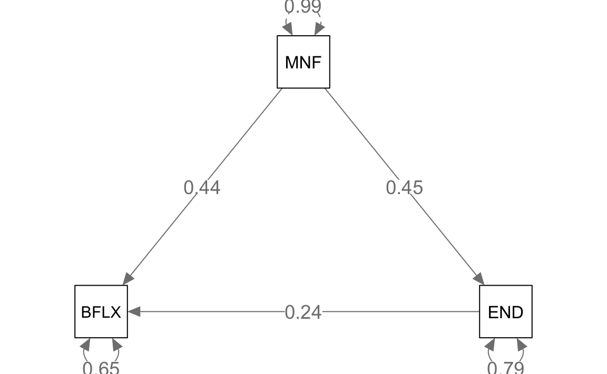
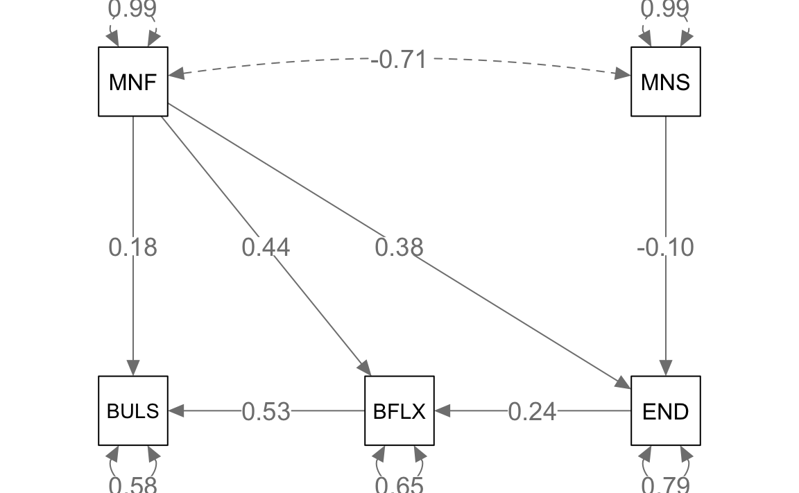

here::here("code", "_common.R") |>
source()
# Load packages
if (!requireNamespace("pacman")) install.packages("pacman")
pacman::p_load(lavaan, semPlot, tidyr)22 Analisi dei percorsi
In questo capitolo imparerai a
- Comprendere il ruolo delle visualizzazioni nell’analisi dei percorsi e la loro importanza per comunicare le relazioni tra variabili.
- Identificare e distinguere le variabili esogene ed endogene in un path diagram.
- Utilizzare i path diagram per rappresentare graficamente le relazioni dirette, indirette e totali tra le variabili.
- Interpretare i parametri della path analysis.
- Applicare le regole di Wright per decomporre correlazioni e covarianze in base ai percorsi causali.
- Modellare le medie delle variabili in un’analisi dei percorsi, integrando le informazioni sulle medie nella struttura complessiva del modello.
- Eseguire l’analisi dei percorsi con
lavaan.
Prerequisiti
- Leggere Path analysis in Mplus: A tutorial using a conceptual model of psychological and behavioral antecedents of bulimic symptoms in young adults di Barbeau et al. (2019).
Preparazione del Notebook
22.1 Introduzione
Le visualizzazioni rivestono un ruolo fondamentale nel comunicare in modo chiaro e sintetico le relazioni tra variabili. Questo è particolarmente evidente quando si opera con modelli di equazioni strutturali (SEM) che delineano una rete di interconnessioni tra variabili sia osservabili che latenti. In tali contesti, i ricercatori frequentemente si avvalgono di strumenti grafici per agevolare la specificazione e l’esplicitazione del modello, oltre che per presentare in maniera comprensibile i risultati ottenuti.
L’analisi del percorso, o path analysis, è una tecnica statistica multivariata utilizzata nell’ambito della ricerca quantitativa per esaminare e descrivere le relazioni causali tra un insieme di variabili. Questo metodo si avvale di modelli grafici, noti come diagrammi di percorso, che rappresentano le relazioni ipotizzate tra le variabili, illustrando graficamente le relazioni dirette, indirette e reciproche tra di esse.
Il fulcro dell’analisi del percorso è la decomposizione e la quantificazione delle relazioni tra le variabili, permettendo agli analisti di distinguere tra effetti diretti, indiretti e totali. Gli effetti diretti corrispondono all’influenza immediata che una variabile esercita su un’altra, mentre gli effetti indiretti rappresentano l’impatto mediato attraverso una o più variabili intermedie. L’effetto totale è la somma degli effetti diretti e indiretti.
Sewall Wright, un genetista che operava presso il Dipartimento dell’Agricoltura degli Stati Uniti, fu il precursore nello sviluppo dei diagrammi di percorso per descrivere i modelli di equazioni strutturali già negli anni ’20 del secolo scorso. Questa sua innovazione ha permesso di ottenere una rappresentazione visiva delle connessioni tra variabili, aprendo la strada all’analisi dei percorsi.
Con il trascorrere del tempo, questa metodologia è stata adottata con successo come uno strumento efficace per discriminare gli effetti diretti da quelli indiretti nelle relazioni tra variabili. Inoltre, essa si è dimostrata di grande utilità nel valutare la solidità e la validità delle relazioni causali ipotizzate all’interno dei modelli di equazioni strutturali.
22.2 Path diagram
Nel path diagram è possibile distinguere due tipi di variabili: quelle che sono influenzate da altre variabili nel sistema e quelle che fungono da sorgenti di effetti.
Variabili esogene: rappresentano elementi esterni al sistema in esame. Esse agiscono come variabili indipendenti, generando effetti in modo causale senza essere influenzate da altre variabili presenti nel modello. Nel diagramma, le loro cause si trovano al di fuori del sistema rappresentato.
Variabili endogene: sono quelle che possono assumere il doppio ruolo di risultati (essendo influenzate da altre variabili) e di cause (influenzando ulteriori variabili). In alcuni casi, svolgono un ruolo esclusivamente dipendente. Le cause delle variabili endogene sono sempre incluse all’interno del path diagram.
Questa distinzione riflette quella tra variabili indipendenti e dipendenti nei modelli lineari, ma con una maggiore enfasi sulla natura causale e sulla posizione delle variabili nel sistema rappresentato.
Un path diagram (diagramma di percorso) utilizza specifici simboli grafici per rappresentare le variabili e le loro relazioni:
- Variabili osservate (o indicatori): rappresentate con quadrati o rettangoli.
- Variabili latenti (come fattori comuni con più indicatori): rappresentate con cerchi o ellissi.
Il path diagram evidenzia le interazioni tra le variabili di interesse, distinguendo i legami causali da quelli associativi:
- Frecce unidirezionali (\(\rightarrow\)): indicano relazioni causali. La variabile alla punta della freccia è influenzata da quella alla base.
- Frecce curve bidirezionali (\(\leftrightarrow\)): rappresentano relazioni associative, indicando covarianze (nella soluzione non standardizzata) o correlazioni (nella soluzione standardizzata), senza implicare una relazione causale diretta.
L’assenza di una freccia tra due variabili implica che non vi è correlazione o relazione causale diretta tra esse nel modello. Il diagramma, quindi, sintetizza visivamente le ipotesi teoriche sulle relazioni tra le variabili.
Nella Figura 22.1, si illustrano le relazioni tra nove variabili osservate e tre variabili latenti mediante il path diagram. Una freccia curva bidirezionale che si collega a una singola variabile rappresenta la varianza residua della variabile, ovvero la quota di varianza non spiegata dalle relazioni causali illustrate nel diagramma di percorso.

Un triangolo contenente il numero 1 simboleggia la media di una variabile (qui non presente).
22.2.1 Parametri nei Modelli di Equazioni Strutturali
I parametri nei modelli di equazioni strutturali possono essere categorizzati come segue, quando le medie non sono oggetto di analisi:
-
Varianze e Covarianze delle Variabili Esogene:
- Questi parametri rappresentano la variabilità intrinseca delle variabili esogene (quelle non influenzate da altre nel modello) e le relazioni reciproche tra di esse.
-
Effetti Diretti sulle Variabili Endogene da Altre Variabili:
- Questi parametri descrivono come le variabili endogene sono influenzate direttamente da altre variabili nel modello.
In termini di specificazione, un parametro nel modello può essere classificato come libero, fisso o vincolato:
-
Parametro Libero:
- Questo tipo di parametro è stimato dal software statistico utilizzando i dati a disposizione.
-
Parametro Fisso:
- Un parametro fisso è definito per essere uguale a una costante specificata a priori. In questo caso, il software accetta il valore costante come stima, indipendentemente dai dati. Ad esempio, l’ipotesi che la variabile X non abbia effetti diretti su Y corrisponde alla specifica che il coefficiente per il percorso da X a Y sia fissato a zero.
-
Parametro Vincolato:
- In questo caso, il parametro segue certe restrizioni imposte nell’analisi, che possono essere basate su teorie o ipotesi precedenti. Ad esempio, l’analista può assumere che due parametri siano uguali.
22.3 Gradi di Libertà nei Modelli Parametrici
In statistica, la complessità di un modello parametrico è limitata dalla quantità di informazioni statistiche disponibili nei dati, ovvero il numero di varianze e covarianze uniche che possono essere derivate dalla matrice di covarianza campionaria. Questo numero non dipende dalla dimensione del campione (\(N\)), ma esclusivamente dal numero di variabili osservate (\(v\)).
22.3.1 Calcolo della Quantità di Informazioni
La quantità di informazioni statistiche in un modello è data dalla formula:
\[ p = \frac{v(v + 1)}{2}, \]
dove \(v\) è il numero di variabili osservate. Questo conteggio include:
- \(v\): le varianze delle variabili osservate (i termini sulla diagonale della matrice di covarianza),
- \(\frac{v(v - 1)}{2}\): le covarianze uniche tra coppie di variabili (i termini sotto la diagonale principale).
Ad esempio, se \(v = 5\), la quantità di informazioni sarà:
\[ p = \frac{5 \times 6}{2} = 15. \]
In questo caso, le 15 informazioni statistiche comprendono 5 varianze e 10 covarianze uniche. Quindi, un modello parametrico con 5 variabili osservate può stimare al massimo 15 parametri. Aggiungere più casi al campione non aumenta la quantità di informazioni, ma incrementare il numero di variabili osservate sì.
22.3.2 Gradi di Libertà del Modello
I gradi di libertà del modello (\(df_M\)) rappresentano la differenza tra la quantità di informazioni disponibili (\(p\)) e il numero di parametri liberi (\(q\)) che il modello cerca di stimare:
\[ df_M = p - q. \]
- Modello identificabile: \(df_M \geq 0\). Il modello ha abbastanza informazioni per stimare i parametri in modo univoco.
- Modello non identificabile: \(df_M < 0\). Non ci sono sufficienti informazioni per stimare tutti i parametri, portando a infinite soluzioni possibili.
Se \(df_M < 0\), il modello deve essere modificato riducendo il numero di parametri liberi, ad esempio imponendo vincoli o fissando alcuni parametri a valori specifici. In caso contrario, i software di modellazione produrranno errori.
22.3.3 Interpretazione dei Gradi di Libertà
Modello con \(df_M = 0\): Si adatta perfettamente ai dati, ma questa perfetta aderenza è inevitabile e non garantisce che il modello sia generalizzabile o valido per altri campioni.
Modello con \(df_M > 0\): Consente un margine di discrepanza tra i dati osservati e le stime del modello. Modelli con più gradi di libertà sono più esposti al rischio di essere rifiutati, ma una loro validazione aumenta la fiducia nella loro generalizzabilità.
Raykov e Marcoulides (2006) descrivono i gradi di libertà come “dimensioni lungo cui un modello può essere rifiutato”. Un modello con più gradi di libertà che si adatta bene ai dati dimostra maggiore robustezza rispetto a un modello con pochi gradi di libertà.
22.3.4 Principio di Parsimonia
Nella scelta tra modelli, è preferibile optare per quello più semplice (con meno parametri liberi), a parità di adattamento ai dati, purché sia teoricamente plausibile. Questo principio di parsimonia è cruciale per evitare sovradattamento e garantire la generalizzabilità del modello.
In sintesi, i gradi di libertà rappresentano un equilibrio tra la complessità del modello e le informazioni disponibili nei dati. La loro corretta interpretazione è essenziale per valutare l’identificabilità, la validità e la parsimonia di un modello parametrico.
22.3.5 Varianza Residua nelle Variabili Endogene
La Figura 22.2 illustra la relazione tra due variabili osservabili e il modo in cui la varianza residua viene trattata nei modelli a percorsi. L’effetto totale di \(X\) su \(Y\) è rappresentato tramite un percorso diretto, che evidenzia l’effetto causale lineare di \(X\) su \(Y\). Nel diagramma:
- La varianza di \(X\), una variabile esogena, è un parametro libero e viene rappresentata da una freccia curva bidirezionale (secondo il simbolismo RAM), che indica una varianza.
- La varianza di \(Y\), una variabile endogena, non è libera, poiché include un termine di disturbo o errore (\(D\)), una variabile latente che rappresenta la porzione di varianza in \(Y\) non spiegata da \(X\).

Nel pannello (a), il valore numerico “1” accanto al percorso tra il termine di disturbo (\(D\)) e \(Y\) è una costante di scala. Questo valore fissa una metrica per il termine di disturbo, necessaria per stimare la varianza latente. Questo approccio è noto come vincolo di identificazione del carico unitario (unit loading identification constraint, ULI). Tale costante informa il software di suddividere la varianza totale di \(Y\) in due componenti ortogonali:
- La varianza spiegata da \(X\).
- La varianza residua, rappresentata dal termine di disturbo (\(var_D\)).
Nel pannello (b), la stessa relazione è presentata in modo più sintetico. Qui, il termine di disturbo non è rappresentato esplicitamente, ma la varianza residua può essere descritta in modo equivalente con una freccia curva bidirezionale che denota \(1 \times var_D \times 1\).
22.3.6 Rappresentazioni Alternative della Varianza Residua
Un altro modo per rappresentare la varianza residua di \(Y\) consiste nell’attribuire \(1\) a \(var_D\) e utilizzare il valore \(\sqrt{var_D}\) per la freccia causale da \(D\) a \(Y\). Il risultato finale resta invariato, poiché la varianza residua di \(Y\) sarebbe comunque espressa come:
\[ \sqrt{var_D} \times 1 \times \sqrt{var_D}. \]
22.3.7 Fonti della Varianza Residua
La varianza residua (\(var_D\)) rappresenta la porzione di varianza in \(Y\) non spiegata da \(X\). Essa può derivare da diverse fonti, tra cui:
- Variazione sistematica da cause non misurate: Fattori non inclusi nel modello che influenzano sistematicamente \(Y\).
- Variazione casuale intrinseca: Variabilità naturale che esiste indipendentemente dalle relazioni modellate.
- Errore di misurazione casuale: Errori nel processo di misurazione, stimabili tramite analisi di affidabilità degli strumenti.
- Mancata specificazione della forma funzionale corretta: Varianza dovuta a un’errata rappresentazione della relazione causale (ad esempio, una relazione modellata come lineare quando è in realtà non lineare).
Nel pannello (a), il percorso da \(D\) a \(Y\) rappresenta l’effetto diretto cumulativo di queste fonti sulla variabile endogena \(Y\). Sebbene teoricamente distinguibili, queste fonti spesso si sovrappongono o interagiscono nella pratica.
22.3.8 Gestione della Varianza Residua nei Software SEM
Nei software per l’analisi SEM, i termini di disturbo vengono gestiti automaticamente. Ad esempio, in lavaan, il comando:
Y ~ Xistruisce il software a regredire \(Y\) su \(X\) e a trattare il termine di disturbo come parametro libero. Questo comando:
- Definisce l’effetto causale di \(X\) su \(Y\).
- Stabilisce che la varianza di \(X\) e quella del termine di disturbo di \(Y\) siano parametri da stimare.
22.3.9 Requisiti per l’Identificazione del Modello
Per garantire l’identificazione del modello, sono necessari due requisiti fondamentali:
- I gradi di libertà (\(df_M\)) devono essere maggiori o uguali a zero: \[ df_M = p - q, \] dove \(p\) è il numero di informazioni statistiche disponibili e \(q\) il numero di parametri liberi.
- Ogni variabile latente, inclusi i termini di disturbo, deve avere una scala definita.
22.3.10 Confronto tra le Rappresentazioni
- Rappresentazione dettagliata (pannello a): Include tutti i termini espliciti, come il termine di disturbo e i vincoli di scala. È utile per comprendere la struttura completa del modello.
- Rappresentazione sintetica (pannello b): Ommette i simboli per i parametri di varianza e il termine di disturbo, fornendo una visione semplificata delle relazioni principali.
In sintesi, entrambe le rappresentazioni descrivono lo stesso modello, ma con diversi livelli di dettaglio. La scelta dipende dall’obiettivo: chiarezza concettuale o sintesi grafica.
22.3.11 Considerazioni sugli Errori di Misurazione nei Modelli a Percorsi
Riprendendo la discussione sulla Figura 22.2, possiamo delineare le seguenti ipotesi fondamentali:
Affidabilità della Variabile Esogena X: Si assume che i punteggi sulla variabile esogena X siano privi di errore, ovvero perfettamente affidabili, con un coefficiente di affidabilità (\(r_{XX}\)) di 1.0.
Correttezza della Direzione Causale: La relazione causale da X a Y è assunta come correttamente specificata e caratterizzata da una stretta linearità.
Indipendenza delle Cause Non Misurate di Y da X: Si presume che le cause non misurate (latenti) di Y non siano correlate con X, escludendo quindi l’esistenza di cause comuni non misurate che influenzano simultaneamente entrambe le variabili – ricordiamo la discusione precedente sull’errore di specificazione.
In ambito di modellazione dei percorsi, l’assunzione che le variabili esogene siano prive di errori di misurazione riflette un presupposto simile a quello adottato nelle regressioni multiple standard, dove i predittori sono considerati esenti da errori di misurazione. Questa assunzione è necessaria poiché le variabili esogene nei modelli a percorsi non includono termini di errore, rendendo impossibile incorporare l’errore casuale in tali modelli. Al contrario, nelle variabili endogene di tali modelli, la presenza di termini di errore permette di tenere conto dell’errore di misurazione.
Nel caso di una regressione bivariata, un errore di misurazione presente solo nella variabile dipendente Y influisce sul modello aumentando l’errore standard della stima di regressione, riducendo il valore di \(R^2\) e diminuendo il valore assoluto del coefficiente di regressione standardizzato, a causa dell’incremento dell’errore di misurazione in Y. Invece, l’errore di misurazione presente solo nella variabile predittiva X (ma non in Y) tende a introdurre un bias negativo nei coefficienti di regressione – cioè una sistematica sottostima dei veri valori dei coefficienti di regressione.
Quando entrambe le variabili X e Y presentano errori di misurazione, la dinamica risultante è più complessa da prevedere. Se gli errori di misurazione in X e Y sono indipendenti, il risultato più comune è un bias negativo (ossia una sottostima dei coefficienti di regressione della popolazione). Tuttavia, se gli errori di misurazione sono comuni tra X e Y, la regressione potrebbe sovrastimare i coefficienti della popolazione, portando a un bias positivo. È essenziale riconoscere che l’errore di misurazione non causa sempre un bias negativo. Di conseguenza, la presenza di errori di misurazione non modellati nelle variabili esogene può significativamente distorcere i risultati, specialmente in presenza di forti correlazioni tra multiple variabili esogene. Per ridurre questi rischi, si raccomanda di valutare l’affidabilità dei punteggi associati alle variabili esogene. Questa pratica metodologica, che consiste nel verificare la precisione e la consistenza delle misure delle variabili predittive, aiuta a identificare e quantificare eventuali errori di misurazione. Un’accurata stima dell’affidabilità contribuisce a garantire l’integrità e la validità dei risultati dei modelli a percorsi, mitigando l’impatto che gli errori di misurazione possono avere sull’analisi.
22.3.12 Direzionalità Causale e Forma Funzionale della Relazione X-Y
L’assunzione che la relazione tra le variabili X e Y sia lineare, come presentato nella Figura 22.2, può essere esaminata attraverso l’analisi dei dati. Se si osserva che la relazione è significativamente curvilinea, si può adeguare l’analisi per attenuare il presupposto di linearità. Ciò può essere realizzato attraverso metodi come la regressione polinomiale o la regressione non parametrica, che permettono di modellare relazioni più complesse rispetto a un semplice modello lineare.
Tuttavia, la direzionalità dell’effetto causale rappresenta una sfida differente e non è direttamente testabile attraverso metodi statistici standard. Nell’ambito dei modelli SEM, le direzioni degli effetti causali sono generalmente ipotizzate piuttosto che empiricamente verificate. Questo perché è possibile costruire modelli SEM equivalenti che utilizzano le stesse variabili e hanno lo stesso numero di gradi di libertà (\(df_M\)), ma con direzioni inverse di alcuni effetti causali. Inoltre, entrambi i modelli, nonostante le differenze nelle direzionalità causali, mostreranno lo stesso grado di adattamento ai dati osservati.
Un’ulteriore ragione per cui la direzionalità causale è tipicamente assunta piuttosto che testata in SEM risiede nella natura degli studi SEM stessi. La maggior parte degli studi SEM si basa su disegni trasversali, dove tutte le variabili sono misurate contemporaneamente, senza una chiara precedenza temporale. In questi contesti, l’unica base per definire la direzionalità causale è l’argomentazione teorica del ricercatore, che deve giustificare perché si presume che X influenzi Y e non viceversa, o perché non si considera una relazione di feedback o causazione reciproca tra le due variabili.
Di conseguenza, la metodologia SEM non è intrinsecamente una tecnica per la scoperta di relazioni causali. Se un modello è corretto, SEM può essere utilizzato per stimare le direzioni, le dimensioni e la precisione degli effetti causali. Tuttavia, questo non è il modo in cui i ricercatori tipicamente impiegano le analisi SEM. Piuttosto, un modello causale viene ipotizzato e poi adattato ai dati basandosi sulle assunzioni delineate. Se queste assunzioni risultano essere errate, anche i risultati dell’analisi saranno invalidi. Questo enfatizza il punto sollevato da Pearl (2000), che sostiene che
le ipotesi causali sono un prerequisito essenziale per validare qualsiasi conclusione causale (p. 136).
Questo implica la necessità di una solida base teorica e concettuale nella formulazione di modelli causali nella modellazione SEM.
22.3.13 Confondimento nei Modelli Parametrici
Nella teoria dei modelli statistici, l’endogenità si riferisce a una situazione in cui una variabile all’interno di un modello è correlata con i termini di errore. Questo può creare problemi nella stima dei parametri del modello e può portare a conclusioni errate riguardo le relazioni causali tra le variabili.
Nel contesto del diagramma di una catena contratta della Figura 22.3, l’endogenità è visualizzata come una covarianza tra la variabile causale misurata X e il disturbo (termine di errore) di Y, indicata con un simbolo specifico. Questo simbolo mostra che c’è una relazione non spiegata tra la causa X e il disturbo associato a Y, suggerendo che X potrebbe non essere una variabile completamente indipendente, come idealmente dovrebbe essere in un modello causale chiaro.
Il modello nella Figura 22.3 (a) non è identificabile per due ragioni principali:
Gradi di libertà negativi (dfM = -1): Questo indica che ci sono più parametri da stimare nel modello rispetto al numero di informazioni (osservazioni) disponibili. In sostanza, il modello sta cercando di “apprendere” troppo da troppo pochi dati, il che lo rende statisticamente non identificabile.
Percorso di confondimento non chiuso tra X e D: Il percorso di confondimento (o back-door) tra X e D indica che c’è una relazione non controllata o non misurata tra la variabile indipendente X e il disturbo D di Y. Poiché D è trattato come una variabile latente (cioè, una variabile non osservata direttamente), questo percorso non può essere chiuso o controllato nel modello. Ciò significa che non possiamo essere sicuri se la relazione osservata tra X e Y è effettivamente causata da X o se è influenzata da altri fattori non considerati nel modello.
In sintesi, l’endogenità in questo contesto si riferisce al problema di avere una variabile indipendente (X) che non è veramente indipendente a causa della sua relazione non spiegata con il termine di errore associato alla variabile dipendente (Y), compromettendo così la chiarezza delle relazioni causali nel modello.

L’endogenità nei modelli parametrici può essere indotta dalle seguenti condizioni:
- Una causa comune non misurata di X e Y (cioè, un confonditore).
- Errore di misurazione casuale in X (cioè, \(r_{XX} < 1.0\)).
- Causalità reciproca, o X e Y si causano a vicenda (cioè, sono entrambe variabili endogene) in un ciclo di feedback.
- Errori autoregressivi, dove X è una versione ritardata di Y e gli errori persistono tra le due variabili.
- Autoregressione spaziale, che si verifica quando i punteggi di ciascun caso sono influenzati da quelli di casi vicini o adiacenti spazialmente.
Nel contesto dei modelli statistici, è possibile affrontare il problema dei confonditori non misurati in due modi principali: attraverso la selezione di covariate appropriate o utilizzando i metodi delle variabili strumentali. Per illustrare, la Figura 22.3 (b) propone l’uso di un proxy (P) che funge da sostituto per un confonditore non misurato che influisce su entrambe le variabili X e Y. In questo contesto, la variabile X è considerata endogena, il che significa che è influenzata dal proxy P (che a sua volta influisce anche su Y), indicando una possibile relazione di causa-effetto tra P e X.
Per chiarire, consideriamo il seguente esempio. Immaginiamo di essere interessati a studiare l’effetto dello stress sulle prestazioni accademiche degli studenti universitari. In questo esempio, “stress” è la variabile X e “prestazioni accademiche” è la variabile Y. Tuttavia, c’è un potenziale confonditore che potrebbe influenzare sia lo stress sia le prestazioni accademiche, ma che non è stato misurato o non può essere facilmente misurato. Questo confonditore potrebbe essere, ad esempio, il “benessere psicologico generale” degli studenti.
In questo caso, un proxy (P) per il benessere psicologico generale potrebbe essere “l’attività fisica regolare”, che è più facilmente misurabile. La ricerca ha mostrato che l’attività fisica regolare può influenzare sia il benessere psicologico generale sia lo stress, rendendola un buon proxy per il nostro confonditore non misurato.
Nel modello, l’attività fisica (il nostro proxy P) presumibilmente influisce sia sulla variabile causale (lo stress) sia sulla variabile di esito (le prestazioni accademiche). Analizzando i dati con questo modello, possiamo cercare di isolare meglio l’effetto dello stress sulle prestazioni accademiche, controllando per l’effetto del benessere psicologico generale tramite il proxy dell’attività fisica. In questo modo, possiamo ottenere una stima più accurata dell’effetto diretto dello stress sulle prestazioni accademiche, riducendo la distorsione potenzialmente causata dal confonditore non misurato.
I metodi delle variabili strumentali, come mostrato nella Figura 22.3 (c), sono utilizzati per affrontare sia i confonditori non misurati sia gli errori di misurazione nella variabile esogena X. Questo viene fatto sostituendo X con una variabile strumentale XZ in un modello di regressione a due stadi (2SLS). In questo approccio, qualsiasi errore di misurazione casuale in X viene trasferito alla variabile strumentale XZ, seguendo le ipotesi standard dei metodi delle variabili strumentali. È importante notare che, nel pannello (c), la variabile X è considerata endogena, sebbene non tutti i ricercatori scelgano di includere variabili strumentali nei loro diagrammi di modelli statistici. Questo approccio consente di isolare meglio l’effetto di X su Y, controllando per le influenze esterne non misurate e gli errori di misurazione.
Per chiarire ulteriormente questi concetti, esamineremo separatamente il modello autoregressivo e l’autoregressione spaziale.
22.3.13.1 Modello Autoregressivo
Un modello autoregressivo è un tipo di modello statistico utilizzato per analizzare dati sequenziali o temporali. In un modello autoregressivo, si prevedono i valori futuri di una variabile basandosi sui suoi valori passati. Questo è particolarmente utile in studi longitudinali o in serie temporali dove si misura la stessa variabile in diversi punti nel tempo.
Nell’esempio della Figura 22.3 (a), immaginiamo che X e Y siano le stesse variabili misurate in due momenti diversi. Ad esempio, X potrebbe essere il livello di ansia di uno studente misurato all’inizio dell’anno scolastico, mentre Y potrebbe essere il livello di ansia dello stesso studente misurato alla fine dell’anno scolastico. In questo caso, stiamo cercando di prevedere i punteggi futuri di ansia (Y) basandoci sui punteggi passati (X).
Un aspetto importante da considerare è che gli errori nelle misure ripetute (le variazioni nei punteggi che non sono spiegati dal modello) possono essere correlati. Ad esempio, se le misurazioni sono fatte in intervalli temporali ravvicinati, le circostanze o gli stati interni che hanno influenzato la prima misurazione potrebbero ancora essere presenti durante la seconda misurazione.
22.3.13.2 Autoregressione Spaziale
L’autoregressione spaziale, invece, si riferisce a un modello che considera le correlazioni spaziali tra dati. Questo tipo di analisi è particolarmente rilevante quando si studiano fenomeni geografici o ambientali. Ad esempio, la diffusione di una malattia in diverse località geografiche potrebbe non essere indipendente: le aree vicine geograficamente potrebbero mostrare pattern simili di diffusione della malattia a causa della loro vicinanza.
In quest’ultimo caso, non stiamo più parlando di misure ripetute nel tempo sulla stessa unità, ma piuttosto di misure effettuate in diverse unità in un contesto spaziale. Le variabili misurate in diverse località fisiche possono influenzarsi a vicenda, e un modello autoregressivo spaziale cerca di catturare queste interdipendenze.
22.3.14 Modelli con Cause Correlate o Effetti Indiretti
Il modello parametrico mostrato nella Figura 22.4 (a) suggerisce che la variabile Y sia influenzata da due variabili esogene correlate, X e W. Questo significa che X e W sono due fattori esterni che hanno un impatto su Y e tra loro esiste una relazione di covarianza, ovvero tendono a variare insieme in un certo modo. Tuttavia, il diagramma non spiega il motivo della relazione tra X e W, lasciando la loro interdipendenza non esaminata in termini causali.

Nell’analizzare questi dati con un software, si prenderanno in considerazione gli effetti sia di X che di W, tenendo conto della loro covarianza campionaria. Ciò significa che quando si stimano gli impatti di X e W su Y, si aggiusta per il fatto che X e W sono correlate tra loro. Alcuni software, come lavaan, presuppongono automaticamente che tutte le cause esogene misurate che influenzano lo stesso risultato (in questo caso Y) siano correlate. Utilizzando il comando
Y ~ X + W
in lavaan, si definisce il modello rappresentato nella Figura 22.4 (a), permettendo al software di stimare gli effetti di X e W tenendo conto della loro covarianza osservata. Questo comando specifica inoltre che le varianze di X, W e il disturbo associato a Y sono tutti considerati parametri liberi da stimare.
Se, invece, si ipotizza che le variabili esogene X e W siano indipendenti, ovvero che non ci sia una covarianza tra di loro, si può usare un comando aggiuntivo in lavaan
X ~~ 0*W
per impostare la covarianza tra X e W a zero. Questo comando mantiene le varianze di X e W come parametri liberi, ma specifica che non c’è una relazione di covarianza diretta tra queste due variabili. In questo modo, il modello considererà X e W come influenze separate e indipendenti su Y.
Nel modello presentato nella Figura 22.4 (a), è importante notare come vengano trattate le interazioni tra le variabili causali X e W. In questo specifico caso, si presume che non ci sia alcuna interazione tra X e W; in altre parole, l’effetto di X sulla variabile di esito Y si assume essere costante a prescindere dai diversi livelli di W, e viceversa. Questa assunzione implica che l’effetto di X su Y è indipendente da W, e l’effetto di W su Y è indipendente da X.
In termini di modellazione, questo significa che stiamo considerando una causalità incondizionata, dove l’effetto di una causa su un esito è costante e non influenzato da altre variabili nel modello. Il modello non prevede, quindi, che l’effetto di X su Y cambi in funzione dei diversi livelli di W. Questo è in contrasto con l’ipotesi di causalità condizionale, dove gli effetti di una variabile su un’altra possono variare in base al livello di una terza variabile. In un modello di causalità condizionale, ad esempio, si potrebbe ipotizzare che l’effetto di X su Y vari a seconda dei diversi livelli di W.
In sintesi, la Figura 22.4 (a) delinea un modello dove le relazioni causali tra X, W e Y sono considerate fisse e non influenzate da potenziali interazioni tra X e W. Questo tipo di modellazione fornisce una visione semplificata delle relazioni causali, che potrebbe essere appropriata in determinate circostanze, ma non tiene conto di possibili dinamiche più complesse tra le variabili.
È fondamentale riconoscere che le ripercussioni degli errori di misurazione in modelli che includono cause correlate sono notevolmente intricate e imprevedibili. Questa complessità deriva principalmente dalla natura del bias che può emergere a seguito di errori di misurazione. In particolare, il bias introdotto da questi errori può manifestarsi in modi diversi, assumendo una forma sia negativa che positiva. Tale variazione dipende da diversi fattori, tra cui se l’errore di misurazione è distribuito in maniera uniforme tra molteplici variabili predittive o se è presente sia nelle variabili predittive che nella variabile di esito. Un altro elemento influente è la natura delle covarianze campionarie tra tutte le variabili coinvolte nel modello.
Data questa complessità, la capacità di modellare esplicitamente gli errori di misurazione all’interno dei modelli SEM rappresenta un vantaggio significativo. Questo approccio permette una maggiore precisione nell’analisi, consentendo di tenere conto delle varie modalità in cui gli errori di misurazione possono influenzare i risultati. La modellazione esplicita degli errori di misurazione in SEM offre quindi la possibilità di ottenere stime più accurate e affidabili, mitigando il rischio di trarre conclusioni errate a causa di bias non riconosciuti o non gestiti adeguatamente.
Nella Figura 22.4 (b), il modello mostra come la variabile X abbia sia effetti diretti che indiretti sulla variabile di esito Y. L’effetto indiretto segue il percorso X → M → Y, dove M funge da variabile intermedia o mediatrice. Questo significa che M è il canale attraverso il quale gli effetti di X sono trasmessi a Y. In questo modello, M è una variabile endogena, nel senso che è influenzata da X (indicato dal percorso X → M), e allo stesso tempo agisce come una variabile causale nei confronti di Y (come indicato da M → Y).
La variabile M assume un doppio ruolo in termini di affidabilità e precisione della misurazione. Da una parte, essendo un esito di X, M è soggetta a disturbi, che includono potenziali errori di misurazione. Dall’altra, nel suo ruolo di causa per Y insieme a X, si presume nelle analisi di regressione che sia X che M siano prive di errore di misurazione. Questa assunzione non presenta problemi se l’affidabilità delle misure su M è elevata, ossia se i punteggi di M sono accurati e consistenti.
In aggiunta, il modello descritto nella Figura 22.4 (b) include tre ipotesi importanti:
- X ha un effetto diretto su Y, oltre al suo effetto indiretto tramite M.
- Non ci sono interazioni negli effetti lineari di X e M su Y, il che significa che l’effetto di X su Y è lo stesso a prescindere dai livelli di M, e viceversa.
- Il modello non omette confonditori potenzialmente importanti tra le coppie di variabili X, M e Y. In altre parole, non ci sono fattori esterni non considerati nel modello che potrebbero influenzare le relazioni tra queste tre variabili.
In sintesi, la Figura 22.4 (b) presenta un modello in cui X influisce su Y sia direttamente che indirettamente attraverso M, e queste relazioni sono considerate prive di interazioni complesse o di confonditori non rilevati.
La gestione degli errori di misurazione e dei confonditori non considerati in modelli che includono effetti causali indiretti rappresenta una sfida notevole, poiché i loro effetti sulle stime possono essere complessi e non sempre prevedibili. Per esemplificare, consideriamo il modello della Figura 22.4 (b) dove si analizza l’effetto indiretto di X su Y attraverso la variabile intermedia M.
Se assumiamo che non ci siano errori di misurazione nella variabile causale X, qualsiasi errore di misurazione presente nella variabile intermedia M può introdurre un bias negativo nelle stime dell’effetto indiretto di X su Y. Ciò significa che l’effetto indiretto potrebbe essere sottostimato a causa dell’errore in M. D’altro canto, se non si tiene conto dei confonditori tra M e Y, cioè se ci sono variabili o fattori non considerati che influenzano sia M che Y, ciò può portare a un bias positivo, sovrastimando l’effetto indiretto.
Quando entrambe queste situazioni – errori di misurazione in M e confonditori tra M e Y – si verificano contemporaneamente, le conseguenze sulle stime dell’effetto indiretto possono variare ampiamente. Potrebbe verificarsi una sovrastima, una sottostima o, in rari casi, nessun bias significativo. Studi di simulazione hanno rivelato che tentare di correggere solo una fonte di bias (come l’errore di misurazione in M) in presenza di entrambi i tipi di bias può addirittura aggravare il problema, portando a stime più distorte rispetto a quelle che non tengono conto di alcun bias.
In sintesi, la valutazione accurata dell’effetto indiretto in un modello che comprende una variabile intermedia richiede un’attenta considerazione sia degli errori di misurazione che dei confonditori potenziali, poiché la loro interazione può influenzare in modi complessi e talvolta inaspettati la validità delle stime.
22.3.15 Modelli Ricorsivi, Non Ricorsivi e Parzialmente Ricorsivi
Tutti i modelli di percorso parametrici più complessi possono essere “assemblati” a partire dai modelli elementari mostrati nelle figure precedenti. Ci sono due tipi fondamentali di modelli: ricorsivi e non ricorsivi. I modelli ricorsivi hanno due caratteristiche essenziali: tutti gli effetti causali sono unidirezionali e i loro disturbi sono indipendenti. La Figura 22.5 (a) è un esempio di un modello ricorsivo (Tutti i modelli considerati finora sono ricorsivi.)
I modelli non ricorsivi, invece, hanno cicli causali (feedback) in cui ≥ 2 variabili endogene sono specificate come cause ed effetti l’una dell’altra, direttamente o indirettamente. Nella loro forma non parametrica, corrispondono a grafi ciclici diretti. La Figura 22.5 (b) è un esempio di un modello parametrico non ricorsivo con causazione reciproca rappresentata come
\(Y1 \overset{\rightarrow}{\underset{\leftarrow}{}} Y2,\)
indicando che le variabili Y1 e Y2 hanno effetti simultanei l’una sull’altra.

I modelli che includono cicli causali possono presentare, o meno, covarianze tra i loro termini di disturbo. La presenza di errori correlati in questi modelli implica l’esistenza di ipotesi su cause comuni non misurate che influenzano le variabili in questione.
Ad esempio, nel modello rappresentato nella Figura 22.5 (b), le variabili Y1 e Y2 sono definite come cause reciproche, ovvero ognuna influisce sull’altra. In aggiunta a ciò, se nel modello è specificata una covarianza tra i termini di disturbo \(D_1\) e \(D_2\), ciò suggerisce che Y1 e Y2 condividono almeno una causa comune non misurata. In altre parole, l’ipotesi è che esistano fattori non osservati che influenzano entrambe le variabili, \(Y1\) e \(Y2\), e questa influenza comune si manifesta attraverso la covarianza tra i loro termini di disturbo.
Esiste anche un altro tipo di modello di percorso, quello che ha effetti unidirezionali e covarianze dei disturbi. I modelli parzialmente ricorsivi con un pattern di correlazioni dei disturbi senza “archi” possono essere trattati nell’analisi proprio come i modelli ricorsivi. Un pattern senza “archi” significa che gli errori correlati sono limitati a coppie di variabili endogene senza effetti diretti tra di loro, come Y1 e Y2 nella Figura 22.5 (c).
I modelli parzialmente ricorsivi che presentano un pattern di correlazioni dei disturbi caratterizzato dalla presenza di “archi” richiedono un trattamento analitico simile a quello dei modelli non ricorsivi. Un pattern con “archi” si verifica quando esiste una covarianza tra i termini di disturbo di due variabili endogene che sono collegate da un effetto diretto. Ad esempio, nella Figura 22.5 (d), le variabili Y1 e Y2 sono collegate da un effetto diretto e presentano una covarianza tra i loro disturbi \(D_1\) e \(D_2\).
La presenza di un effetto diretto insieme a disturbi correlati tra due variabili crea un percorso di confondimento nel modello. Un percorso di confondimento è una via attraverso la quale può fluire l’influenza causale indiretta, potenzialmente distorcendo l’interpretazione dei rapporti causali diretti. In questi casi, la selezione di covariate (variabili aggiuntive che potrebbero spiegare parte della relazione osservata) non è sufficiente per “chiudere” o eliminare questo percorso di confondimento. Pertanto, questi modelli richiedono un’attenzione particolare nell’analisi per garantire che le stime degli effetti causali siano accurate e non siano influenzate in modo improprio da questi percorsi di confondimento.
I modelli ricorsivi e quelli parzialmente ricorsivi che non includono cicli causali possono essere efficacemente rappresentati tramite grafi aciclici diretti (DAG). Questo tipo di rappresentazione grafica implica che è possibile applicare tutte le regole di identificazione grafica esposte in questo capitolo. Nei DAG, le relazioni causali sono rappresentate come flussi unidirezionali senza cicli, rendendo più chiaro e diretto l’analisi delle relazioni tra le variabili.
D’altra parte, i modelli non ricorsivi che includono cicli causali, come quello illustrato nella Figura 22.5 (b), sono rappresentati da grafi ciclici diretti. In questi grafi, le variabili possono influenzarsi a vicenda in un ciclo continuo, creando una struttura più complessa. A causa di questa complessità, le regole di identificazione grafica per i grafi ciclici diretti non sono sviluppate quanto quelle per i DAG. Questo significa che analizzare e interpretare i modelli non ricorsivi con cicli causali è più complesso e richiede l’uso di approcci analitici più avanzati o specifici per gestire correttamente le relazioni cicliche tra le variabili.
Possiamo stabilire una regola generale per i modelli di percorso parametrici: i modelli ricorsivi o parzialmente ricorsivi, che presentano schemi di covarianze dei disturbi privi di “archi” e che soddisfano due condizioni specifiche, sono considerati identificati. Queste condizioni sono: (1) i gradi di libertà del modello (dfM) devono essere maggiori o uguali a zero e (2) ogni variabile non misurata, inclusi i termini di errore, deve essere associata a una scala metrica.
Inoltre, i modelli di equazioni strutturali che sono identificati e hanno un numero di osservazioni uguale al numero dei parametri liberi (dfM = 0) sono classificati come “appena identificati”. Al contrario, i modelli con più osservazioni rispetto ai parametri liberi (dfM > 0) sono considerati “sovraidentificati”.
Un modello di equazioni strutturali può risultare sotto-identificato in due modi distinti: (1) se dfM è inferiore a zero, oppure (2) se, pur avendo un dfM maggiore o uguale a zero, alcuni parametri liberi rimangono sotto-identificati perché non vi sono sufficienti informazioni per la loro stima, anche se altri parametri all’interno dello stesso modello sono identificati. Nel secondo scenario, l’intero modello è considerato non identificato, anche se dfM è maggiore o uguale a zero. In generale, un modello si considera sotto-identificato quando non è possibile stimare in modo univoco tutti i suoi parametri liberi.
22.4 Analisi dei percorsi e regressione bivariata
Cominciamo esaminando l’analisi dei percorsi partendo dall’esempio più semplice, ovvero il modello di regressione lineare. Il modello di regressione bivariata si esprime tramite l’equazione seguente:
\[y_1 = b_0 + b_1 x_1 + \epsilon_1,\]
dove \(y\) rappresenta la variabile dipendente, \(b_0\) rappresenta l’intercetta, \(b_1\) rappresenta la pendenza della retta di regressione, \(x\) è la variabile indipendente e \(\epsilon\) è il termine di errore.
Nell’ambito della descrizione delle relazioni tra variabili manifeste e latenti, si adotta spesso la notazione LISREL. In questa notazione, il modello presentato in precedenza può essere espresso come segue:
\[y_1 = \alpha + \gamma x_1 + \zeta_1,\]
dove:
- \(x_1\): variabile esogena singola,
- \(y_1\): variabile endogena singola,
- \(\alpha\): intercetta di \(y_1\),
- \(\gamma_1\): coefficiente di regressione,
- \(\zeta_1\): termine di errore di \(y_1\),
- \(\phi\): varianza o covarianza della variabile esogena,
- \(\psi\): varianza o covarianza residuale della variabile endogena.
Il diagramma di percorso per il modello di regressione bivariata è illustrato nella Figura 22.6.

Facciamo un esempio numerico. Simuliamo tre variabili: x1, x2, y.
Consideriamo la relazione tra x1 (variabile endogena) e y (variabile endogena). In R possiamo adattare ai dati un modello di regressione mediante la funzione lm.
m1a <- lm(y ~ x1, data = dat)
summary(m1a)
#>
#> Call:
#> lm(formula = y ~ x1, data = dat)
#>
#> Residuals:
#> Min 1Q Median 3Q Max
#> -82.46 -29.54 -3.44 29.20 122.23
#>
#> Coefficients:
#> Estimate Std. Error t value Pr(>|t|)
#> (Intercept) 37.597 18.984 1.98 0.05
#> x1 1.329 0.204 6.51 3.3e-09
#>
#> Residual standard error: 42.3 on 98 degrees of freedom
#> Multiple R-squared: 0.302, Adjusted R-squared: 0.295
#> F-statistic: 42.4 on 1 and 98 DF, p-value: 3.25e-09Usiamo ora lavaan per adattare lo stesso modello ai dati.
m1b <- "
y ~ 1 + x1
"
fit1b <- sem(m1b, data = dat)
parameterEstimates(fit1b)
#> lhs op rhs est se z pvalue ci.lower ci.upper
#> 1 y ~1 37.60 18.794 2.00 0.045 0.763 74.43
#> 2 y ~ x1 1.33 0.202 6.57 0.000 0.933 1.73
#> 3 y ~~ y 1754.10 248.067 7.07 0.000 1267.897 2240.30
#> 4 x1 ~~ x1 429.43 0.000 NA NA 429.432 429.43
#> 5 x1 ~1 90.65 0.000 NA NA 90.650 90.65L’intercetta di y ~1 (37.597) e il coefficiente di regressione di y ~ x1 (1.329) corrispondono all’output di lm() con piccoli errori di arrotondamento. L’intercetta per x1 ~1 (90.650) e la sua varianza x1 ~~ x1 (429.432) descrivono una media ed una varianza esogena e corrispondono alla media e alla varianza univariate:
mean(dat$x1)
#> [1] 90.7La varianza residua di y, y ~~ y corrisponde alla quota della varianza osservata della variabile y che non è spiegata dalla relazione lineare su x1:
var(dat$y) * 99 / 100 - (1.3286 * 429.432 * 1.3286)
#> [1] 1754La funzione semPaths consente di creare un diagramma di percorso a partire dall’oggetto creato da sem.
semPlot::semPaths(
fit1b,
layout = "tree", sizeMan = 7, sizeInt = 5, style = "ram",
residuals = TRUE, intAtSide = FALSE, edge.label.cex = 1.15,
whatLabels = "est", nCharNodes = 0, normalize = FALSE
)
22.5 Analisi dei percorsi e regressione multipla
La regressione semplice è limitata a una sola variabile esogena. Nella pratica, un ricercatore può essere interessato a studiare come un gruppo di variabili esogene possano predire una variabile di esito. Supponiamo di avere ancora una sola variabile di esito endogena ma due predittori esogeni; questo caso è noto come regressione multipla:
\[ y_1 = \alpha_1 + \gamma_1 x_1 + \gamma_2 x_2 + \zeta_1. \]
Il diagramma di percorso mostra la relazione tra tutte le variabili, comprendendo anche i fattori di disturbo, e fornisce dunque la rappresentazione grafica dell’equazione precedente.

I coefficienti di percorso associati alle frecce orientate esprimono la portata del nesso causale e corrispondono ai pesi beta (ovvero ai coefficienti parziali di regressione standardizzati). Le frecce non orientate esprimono la portata della pura associazione tra variabili e dunque corrispondono alle correlazioni/covarianze.
In un diagramma di percorso, il numero di equazioni corrisponde al numero di variabili endogene del modello. Nel caso specifico, poiché vi è una sola variabile endogena (ovvero \(y\)), esiste un’unica equazione che descrive le relazioni causalitiche interne al path diagram. All’interno di ciascuna equazione, inoltre, il numero di termini corrisponde al numero di frecce orientate che puntano verso la variabile endogena. Nell’esempio sopra citato, pertanto, la sola equazione del modello contiene tre termini, ciascuno associato ad una freccia orientata.
Usando lm otteniamo la seguente stima dei coefficienti:
Gli stessi risultati si ottengono con lavaan.
m2b <- "
y ~ 1 + x1 + x2
x1 ~~ x1
x2 ~~ x2
x1 ~~ x2
"fit2b <- sem(m2b, data = dat)parameterEstimates(fit2b)
#> lhs op rhs est se z pvalue ci.lower ci.upper
#> 1 y ~1 44.454 13.457 3.30 0.001 18.078 70.830
#> 2 y ~ x1 0.199 0.185 1.08 0.282 -0.164 0.562
#> 3 y ~ x2 1.085 0.111 9.78 0.000 0.868 1.303
#> 4 x1 ~~ x1 429.432 60.731 7.07 0.000 310.402 548.462
#> 5 x2 ~~ x2 1192.840 168.693 7.07 0.000 862.208 1523.472
#> 6 x1 ~~ x2 446.927 84.379 5.30 0.000 281.546 612.307
#> 7 y ~~ y 896.963 126.850 7.07 0.000 648.342 1145.584
#> 8 x1 ~1 90.650 2.072 43.74 0.000 86.589 94.712
#> 9 x2 ~1 88.026 3.454 25.49 0.000 81.257 94.795Esaminiamo il diagramma di percorso.
semPlot::semPaths(
fit2b,
layout = "tree", sizeMan = 7, sizeInt = 5, style = "ram",
residuals = TRUE, intAtSide = FALSE, edge.label.cex = 1.15,
whatLabels = "est", nCharNodes = 0, normalize = FALSE
)
22.6 Effetti diretti e indiretti
L’analisi del percorso offre un metodo essenziale per distinguere tra diverse tipologie di effetti che influenzano le variabili in esame: l’effetto diretto, l’effetto indiretto e l’effetto totale. Gli effetti diretti rappresentano l’influenza che una variabile esercita su un’altra senza mediazione di altre variabili intermedie. Gli effetti indiretti, invece, operano attraverso l’intermediazione di almeno una variabile aggiuntiva nel processo. L’effetto totale è la somma cumulativa degli effetti diretti e indiretti.
Nella Figura 22.8, la variabile \(y_1\) esercita un effetto diretto sulla variabile \(y_2\). Allo stesso tempo, \(y_1\) produce un effetto indiretto sulla variabile \(y_3\), poiché non esiste una connessione causale diretta tra \(y_1\) e \(y_3\). Nel contesto rappresentato, la variabile \(y_1\) agisce come variabile esogena, mentre le variabili \(y_2\) e \(y_3\) fungono da variabili endogene.

22.7 Le regole di Wright
L’obiettivo primario dell’analisi del percorso consiste nella decomposizione della correlazione (o della covarianza) in base alla somma dei vari percorsi (diretti e indiretti) che collegano due variabili mediante coefficienti noti come “path coefficients.” Utilizzando il diagramma del percorso, Sewall Wright (1921, 1934) formulò le regole che, tramite le “tracing rules,” stabiliscono il collegamento tra le correlazioni (o covarianze) delle variabili e i parametri del modello. Le tracing rules si possono esprimere nei seguenti termini:
- È possibile procedere in avanti lungo una freccia e poi a ritroso, seguendo la direzione della freccia, ma non è permesso muoversi in avanti e poi tornare indietro.
- Un percorso composto non deve attraversare più di una volta la stessa variabile, cioè non possono esserci cicli.
- Un percorso non può contenere più di una linea curva.
Il termine “percorso” fa riferimento al tracciato che connette due variabili e si compone di sequenze di frecce unidirezionali e curve non direzionali. A ciascun percorso valido (cioè conforme alle regole di Wright) viene assegnato un valore numerico che rappresenta il prodotto dei coefficienti presenti lungo il percorso stesso. I coefficienti di percorso possono essere coefficienti parziali di regressione standardizzati se il legame è unidirezionale, oppure coefficienti di correlazione se il legame è bidirezionale.
22.8 Scomposizione delle correlazioni/covarianze
Il principio fondamentale è stato formulato da Sewall Wright (1934) nel seguente modo:
Ogni correlazione tra variabili in una rete di relazioni sequenziali può essere analizzata nei contributi provenienti da tutti i percorsi (diretti o attraverso fattori comuni) con i quali le due variabili sono connesse. Ogni contributo ha un valore pari al prodotto dei coefficienti relativi ai percorsi elementari. Se sono presenti correlazioni residue (rappresentate da frecce bidirezionali), uno (ma mai più di uno) dei coefficienti moltiplicati per ottenere il contributo del percorso di connessione può essere un coefficiente di correlazione. Gli altri sono tutti coefficienti di percorso.
Da questo principio possiamo derivare la regola di scomposizione della correlazione: la correlazione o covarianza tra due variabili può essere scomposta in un numero di termini uguale al numero di percorsi che le collegano. Ogni termine è ottenuto dal prodotto dei coefficienti associati alle variabili lungo il percorso. In altre parole, è possibile decomporre la correlazione o la covarianza tra due variabili in tanti contributi quanti sono i percorsi possibili che collegano le due variabili.
22.8.1 Scomposizione della varianza
La decomposizione della varianza di una variabile endogena può essere affrontata attraverso una suddivisione in due componenti: una componente spiegata, attribuibile alle variabili che esercitano un’influenza causale su di essa, e una componente non spiegata. La componente spiegata della varianza deriva dall’aggregazione degli effetti delle diverse variabili che sono connessi alla variabile endogena, rispettando le regole di tracciamento definite da Wright. Il numero di addendi corrisponde al numero di percorsi che collegano la variabile endogena a se stessa. In tal modo, la varianza spiegata rappresenta la parte della varianza totale della variabile endogena che può essere attribuita alle influenze delle variabili correlate attraverso i percorsi definibili all’interno del modello.
22.8.2 Relazioni tra variabili endogene e esogene
Complessivamente, i concetti di varianza, covarianza e correlazione informano direttamente il calcolo dei coefficienti di percorso in un path diagram secondo le seguenti “8 regole dei coefficienti di percorso”.
- Regola 1: Le relazioni non specificate tra le variabili esogene sono semplicemente le loro correlazioni bivariate.
- Regola 2: Quando due variabili sono collegate da un singolo percorso, il coefficiente di quel percorso è il coefficiente di regressione.
- Regola 3: La forza di un percorso composto (che include più collegamenti) è il prodotto dei coefficienti individuali.
- Regola 4: Quando le variabili sono collegate da più di un percorso, ciascun percorso è il coefficiente di regressione “parziale”.
- Regola 5: Gli errori sulle variabili endogene si riferiscono alle correlazioni o varianze non spiegate che derivano dalle variabili non misurate.
- Regola 6: Le correlazioni non analizzate (residui) tra due variabili endogene sono le loro correlazioni parziali.
- Regola 7: L’effetto totale che una variabile ha su un’altra è la somma dei suoi effetti diretti e indiretti.
- Regola 8: L’effetto totale (compresi i percorsi non diretti) è equivalente alla correlazione totale.
Esempio. Consideriamo nuovamente il modello di regressione multipla con due variabili esogene e una sola variabile endogena che è stato presentato sopra.
La la covarianza tra y e x1
cov(dat$y, dat$x1) * 99 / 100
#> [1] 571può essere ricavata usando le regole di Wright nel modo seguente:
0.199 * 429.43 + 1.085 * 446.93
#> [1] 570La quota di varianza non spiegata della variabile endogena è:
(var(dat$y) * 99 / 100) - (
0.199^2 * 429.43 + (1.085)^2 * 1192.84 + 2 * (0.199 * 1.085 * 446.93)
)
#> [1] 89822.9 Oltre la Regressione Multipla
Per comprendere come applicare la path analysis a strutture più complesse rispetto alla regressione multipla, esaminiamo uno studio esemplare di Barbeau et al. (2019). Questo studio illustra l’utilizzo della path analysis attraverso due modelli: uno di mediazione e un altro più articolato.
L’analisi di mediazione consente di studiare come una variabile indipendente (\(X\)) influenzi una variabile dipendente (\(Y\)) tramite una variabile intermedia, chiamata mediatore (\(M\)). Questo approccio offre una visione più approfondita rispetto alla regressione multipla, esplorando i meccanismi sottostanti le relazioni tra le variabili.
Un esempio applicativo deriva dalla Self-Determination Theory (SDT) di Deci e Ryan (2000), che esamina come la soddisfazione e la frustrazione dei bisogni psicologici fondamentali influenzino i sintomi bulimici in giovani donne adulte. Secondo la SDT, i bisogni di autonomia, competenza e relazionalità sono cruciali per il benessere psicologico. La loro frustrazione può promuovere comportamenti disfunzionali, mentre la loro soddisfazione agisce da fattore protettivo (Vansteenkiste & Ryan, 2013).
Il modello proposto è costituito dalle seguenti componenti.
-
Frustrazione dei bisogni psicologici:
- Favorisce l’approvazione degli ideali culturali di magrezza.
- È associata a una maggiore inflessibilità negli schemi corporei.
-
Approvazione degli ideali di magrezza:
- Predice l’inflessibilità negli schemi corporei.
-
Inflessibilità degli schemi corporei:
- Media l’effetto della frustrazione dei bisogni sui sintomi bulimici.
Questo modello concettuale suggerisce che la frustrazione dei bisogni riduca le risorse psicologiche necessarie per resistere agli ideali culturali disfunzionali, aumentando la vulnerabilità psicologica e il rischio di sintomi patologici (Pelletier & Dion, 2007).
Il modello teorico può essere formalizzato attraverso tre percorsi principali:
- Effetto di \(X\) su \(M\) (coefficiente \(a\)): Misura l’influenza della frustrazione dei bisogni (\(X\)) sull’approvazione degli ideali culturali (\(M\)).
- Effetto di \(M\) su \(Y\) (coefficiente \(b\)): Valuta come \(M\) influenzi l’inflessibilità degli schemi corporei e i sintomi bulimici (\(Y\)).
- Effetto diretto di \(X\) su \(Y\) (coefficiente \(c'\)): Analizza l’effetto residuo di \(X\) su \(Y\), indipendentemente da \(M\).
Matematicamente, il modello è descritto dalle seguenti equazioni di regressione:
-
Equazione per il mediatore (\(M\)):
\[ M = a_0 + a \cdot X + e_M , \]
dove \(a\) è l’effetto di \(X\) su \(M\); \(e_M\) è il termine di errore.
-
Equazione per la variabile dipendente (\(Y\)):
\[ Y = b_0 + b \cdot M + c' \cdot X + e_Y , \]
dove \(b\) è l’effetto di \(M\) su \(Y\); \(c'\) è l’effetto diretto di \(X\) su \(Y\).
Nel modello di mediazione, è possibile distinguere tre tipi di effetti, ciascuno quantificabile in modo specifico.
- Effetto diretto (\(c'\)): rappresenta l’influenza della variabile indipendente (\(X\)) sulla variabile dipendente (\(Y\)) che non passa attraverso il mediatore (\(M\)).
-
Effetto indiretto (\(a \cdot b\)): misura il contributo della variabile indipendente (\(X\)) alla variabile dipendente (\(Y\)) mediato dal percorso attraverso il mediatore (\(M\)).
- Effetto totale (\(c' + a \cdot b\)): corrisponde alla somma degli effetti diretto e indiretto, rappresentando l’influenza complessiva di \(X\) su \(Y\).
Qui, \(a\), \(b\) e \(c'\) sono i coefficienti stimati nel modello di path analysis.
Lo studio di Barbeau et al. (2019) utilizza un campione di 192 partecipanti. Sono stati utilizzati i seguenti strumenti:
- Frustrazione e soddisfazione dei bisogni: Basic Psychological Needs Satisfaction and Frustration Scale (Chen et al., 2015).
- Approvazione degli ideali di magrezza: Endorsement of Societal Beliefs Related to Thinness and Obesity (Boyer, 1991).
- Inflessibilità degli schemi corporei: Body Image-Acceptance and Action Questionnaire (Sandoz et al., 2013).
- Sintomi bulimici: Eating Disorders Inventory-2 (Garner, 1991).
La matrice di covarianza delle variabili è rappresentata come segue:
upper <- '
1 0.44 -0.41 0.55 0.63
1 -0.37 0.45 0.44
1 -0.71 -0.39
1 0.47
1
'
dat_cov <- lavaan::getCov(
upper,
lower = FALSE,
names = c("BFLX", "END", "MNS", "MNF", "BULS")
)
dat_cov
#> BFLX END MNS MNF BULS
#> BFLX 1.00 0.44 -0.41 0.55 0.63
#> END 0.44 1.00 -0.37 0.45 0.44
#> MNS -0.41 -0.37 1.00 -0.71 -0.39
#> MNF 0.55 0.45 -0.71 1.00 0.47
#> BULS 0.63 0.44 -0.39 0.47 1.00Nell’esempio, BFLX (Body Inflexibility) è la variabile endogena, MNF (Mean Need Frustration) è la variabile esogena, ed END (Endorsement of Societal Beliefs about Thinness and Obesity) è la variabile mediatrice.
Barbeau et al. (2019) hanno utilizzato Mplus per stimare i coefficienti di percorso, ottenendo \(a = 0.37\), \(b = 0.29\) e \(c = 0.34\). Esamineremo il medesimo modello utilizzando il pacchetto lavaan in R.
Il modello di mediazione viene definito come segue:
mod <- "
# Effetto diretto
BFLX ~ c*MNF
# Mediatore
BFLX ~ b*END
END ~ a*MNF
# Effetto indiretto
ab := a*b
# Effetto totale
total := c + (a*b)
"Adattiamo il modello ai dati osservati, utilizzando una matrice di covarianza e un campione di 192 partecipanti:
fit <- sem(
mod,
sample.cov = dat_cov,
sample.nobs = 192
)I risultati vengono analizzati con il seguente comando:
summary(
fit, fit.measures = TRUE, standardized = TRUE, rsquare = TRUE
)
#> lavaan 0.6-19 ended normally after 1 iteration
#>
#> Estimator ML
#> Optimization method NLMINB
#> Number of model parameters 5
#>
#> Number of observations 192
#>
#> Model Test User Model:
#>
#> Test statistic 0.000
#> Degrees of freedom 0
#>
#> Model Test Baseline Model:
#>
#> Test statistic 125.849
#> Degrees of freedom 3
#> P-value 0.000
#>
#> User Model versus Baseline Model:
#>
#> Comparative Fit Index (CFI) 1.000
#> Tucker-Lewis Index (TLI) 1.000
#>
#> Loglikelihood and Information Criteria:
#>
#> Loglikelihood user model (H0) -480.945
#> Loglikelihood unrestricted model (H1) -480.945
#>
#> Akaike (AIC) 971.890
#> Bayesian (BIC) 988.178
#> Sample-size adjusted Bayesian (SABIC) 972.339
#>
#> Root Mean Square Error of Approximation:
#>
#> RMSEA 0.000
#> 90 Percent confidence interval - lower 0.000
#> 90 Percent confidence interval - upper 0.000
#> P-value H_0: RMSEA <= 0.050 NA
#> P-value H_0: RMSEA >= 0.080 NA
#>
#> Standardized Root Mean Square Residual:
#>
#> SRMR 0.000
#>
#> Parameter Estimates:
#>
#> Standard errors Standard
#> Information Expected
#> Information saturated (h1) model Structured
#>
#> Regressions:
#> Estimate Std.Err z-value P(>|z|) Std.lv Std.all
#> BFLX ~
#> MNF (c) 0.441 0.065 6.769 0.000 0.441 0.441
#> END (b) 0.241 0.065 3.702 0.000 0.241 0.241
#> END ~
#> MNF (a) 0.450 0.064 6.982 0.000 0.450 0.450
#>
#> Variances:
#> Estimate Std.Err z-value P(>|z|) Std.lv Std.all
#> .BFLX 0.648 0.066 9.798 0.000 0.648 0.651
#> .END 0.793 0.081 9.798 0.000 0.793 0.797
#>
#> R-Square:
#> Estimate
#> BFLX 0.349
#> END 0.203
#>
#> Defined Parameters:
#> Estimate Std.Err z-value P(>|z|) Std.lv Std.all
#> ab 0.109 0.033 3.271 0.001 0.109 0.109
#> total 0.550 0.060 9.125 0.000 0.550 0.550Generiamo un diagramma per visualizzare il modello stimato:
semPlot::semPaths(
fit,
layout = "tree", sizeMan = 7, sizeInt = 5, style = "ram",
residuals = TRUE, intAtSide = FALSE, edge.label.cex = 1.15,
whatLabels = "est", nCharNodes = 0, normalize = FALSE
)
I coefficienti stimati con lavaan sono simili ma non identici a quelli ottenuti con Mplus. Ad esempio:
- Effetto diretto di MNF su BFLX: \(c' = 0.44\)
- Effetto indiretto: \(a \cdot b = 0.45 \cdot 0.24 = 0.109\)
- Effetto totale: \(c' + a \cdot b = 0.44 + 0.109 = 0.55\)
I valori riportati nell’output di lavaan includono anche gli errori standard e i test per verificare se gli effetti siano significativamente diversi da zero.
Le correlazioni tra le variabili possono essere calcolate combinando i coefficienti di percorso. Ad esempio:
-
Correlazione tra BFLX e MNF:
.44 + .45 * .24 #> [1] 0.548 -
Correlazione tra BFLX e END:
.24 + .44 * .45 #> [1] 0.438
La varianza spiegata dalle variabili esogene per le due variabili endogene è riportata nell’output di lavaan. Ad esempio, la varianza spiegata di END è calcolata come:
0.45^2
#> [1] 0.203Consideriamo ora un modello più complesso (Fig. 4 in Barbeau et al., 2019), che include ulteriori relazioni tra variabili:
mod <- "
BULS ~ MNF + BFLX
BFLX ~ END + MNF
END ~ MNS + MNF
"Il modello esteso viene adattato ai dati utilizzando il seguente codice:
fit2 <- sem(
mod,
sample.cov = dat_cov,
sample.nobs = 192
)I risultati vengono analizzati e rappresentati graficamente:
summary(
fit2, fit.measures = TRUE, standardized = TRUE, rsquare = TRUE
)
#> lavaan 0.6-19 ended normally after 1 iteration
#>
#> Estimator ML
#> Optimization method NLMINB
#> Number of model parameters 9
#>
#> Number of observations 192
#>
#> Model Test User Model:
#>
#> Test statistic 8.229
#> Degrees of freedom 3
#> P-value (Chi-square) 0.042
#>
#> Model Test Baseline Model:
#>
#> Test statistic 239.501
#> Degrees of freedom 9
#> P-value 0.000
#>
#> User Model versus Baseline Model:
#>
#> Comparative Fit Index (CFI) 0.977
#> Tucker-Lewis Index (TLI) 0.932
#>
#> Loglikelihood and Information Criteria:
#>
#> Loglikelihood user model (H0) -700.169
#> Loglikelihood unrestricted model (H1) -696.054
#>
#> Akaike (AIC) 1418.338
#> Bayesian (BIC) 1447.655
#> Sample-size adjusted Bayesian (SABIC) 1419.146
#>
#> Root Mean Square Error of Approximation:
#>
#> RMSEA 0.095
#> 90 Percent confidence interval - lower 0.017
#> 90 Percent confidence interval - upper 0.176
#> P-value H_0: RMSEA <= 0.050 0.130
#> P-value H_0: RMSEA >= 0.080 0.696
#>
#> Standardized Root Mean Square Residual:
#>
#> SRMR 0.035
#>
#> Parameter Estimates:
#>
#> Standard errors Standard
#> Information Expected
#> Information saturated (h1) model Structured
#>
#> Regressions:
#> Estimate Std.Err z-value P(>|z|) Std.lv Std.all
#> BULS ~
#> MNF 0.177 0.066 2.688 0.007 0.177 0.177
#> BFLX 0.533 0.066 8.085 0.000 0.533 0.533
#> BFLX ~
#> END 0.241 0.065 3.702 0.000 0.241 0.241
#> MNF 0.441 0.065 6.769 0.000 0.441 0.441
#> END ~
#> MNS -0.102 0.091 -1.116 0.264 -0.102 -0.102
#> MNF 0.378 0.091 4.140 0.000 0.378 0.378
#>
#> Variances:
#> Estimate Std.Err z-value P(>|z|) Std.lv Std.all
#> .BULS 0.578 0.059 9.798 0.000 0.578 0.581
#> .BFLX 0.648 0.066 9.798 0.000 0.648 0.651
#> .END 0.788 0.080 9.798 0.000 0.788 0.792
#>
#> R-Square:
#> Estimate
#> BULS 0.419
#> BFLX 0.349
#> END 0.208
semPlot::semPaths(
fit2,
layout = "tree", sizeMan = 7, sizeInt = 1, style = "ram",
residuals = TRUE, intAtSide = FALSE, edge.label.cex = 1.15,
whatLabels = "est", nCharNodes = 0, normalize = FALSE
)
I coefficienti ottenuti con lavaan sono confrontati con quelli riportati da Barbeau et al. (2019):
-
Varianza spiegata di END:
lavaan= 0.208, Barbeau et al. (2019) = 0.209 -
Varianza spiegata di BFLX:
lavaan= 0.349, Barbeau et al. (2019) = 0.292 -
Varianza spiegata di BULS:
lavaan= 0.419, Barbeau et al. (2019) = 0.478
Ad esempio, la correlazione tra MNF e BULS può essere calcolata come somma degli effetti diretti e indiretti:
-.71 * -.10 * .24 * .53 +
.38 * .24 * .53 +
.44 * .53 +
.18
#> [1] 0.471Il valore risultante corrisponde al valore osservato nel campione (0.47), confermando la coerenza del modello stimato.
22.10 Modellare le Medie con la Path Analysis
La modellazione delle medie in un’analisi dei percorsi (path analysis) si concentra sulla stima e sull’interpretazione delle medie delle variabili manifeste, oltre che sulle relazioni tra di esse. Questo approccio consente di integrare le informazioni sulle medie direttamente nella struttura complessiva del modello, offrendo una visione più completa dei dati.
22.10.1 Passaggi per Modellare le Medie
Raccolta dei Dati:
È necessario disporre di una matrice di covarianza o di correlazione che riassuma le relazioni tra le variabili, oltre alle medie delle variabili stesse. Le medie sono fondamentali per modellare la struttura media del sistema.Specifica del Modello:
Il modello deve includere sia la struttura di covarianza (che descrive le relazioni tra le variabili) sia la struttura delle medie (che descrive i valori medi delle variabili). Questo garantisce che il modello consideri non solo le relazioni, ma anche il comportamento medio delle variabili in studio.-
Integrazione delle Medie:
- Per le variabili esogene (quelle che non dipendono da altre variabili nel modello), vengono considerate direttamente le medie osservate.
- Per le variabili endogene (quelle influenzate da altre variabili nel modello), è necessario includere le intercette, che rappresentano i valori medi previsti nel modello.
- Per le variabili esogene (quelle che non dipendono da altre variabili nel modello), vengono considerate direttamente le medie osservate.
Costante “1” per le Medie:
Per modellare le medie, si aggiunge una costante “1” a tutte le equazioni che descrivono le variabili manifeste inlavaan. Questo passaggio permette di includere esplicitamente le medie nella struttura del modello.Stima del Modello:
Durante la stima, il modello calcola le medie previste per ciascuna variabile endogena, basandosi sui valori medi delle variabili esogene e sui coefficienti di percorso. Questi calcoli consentono di confrontare le medie previste con quelle osservate, valutando l’aderenza del modello ai dati.
22.10.2 Calcolo delle Medie Previste
La path analysis permette di modellare non solo le relazioni tra variabili, ma anche le loro medie. Per una variabile dipendente \(Y\), il modello base è:
\[ Y = c_0 + \sum_{i=1}^p b_i X_i + \varepsilon , \]
dove:
- \(c_0\) è l’intercetta (il valore atteso di Y quando tutte le X sono zero),
- \(b_i\) sono i coefficiente di percorso che collegano \(X_i\) a \(Y\),
- \(X_i\) sono le variabili predittive,
- \(\varepsilon\) è il termine di errore (con media zero).
La media prevista di \(Y\), indicata con \(\mu_Y\), è calcolata come:
\[ \mu_Y = c_0 + \sum_{i=1}^p b_i \mu_{X_i} , \]
dove \(\mu_{X_i}\) rappresenta la media osservata della variabile \(X_i\).
È importante notare che:
- L’intercetta \(c_0\) contribuisce direttamente alla media.
- Ogni predittore contribuisce attraverso il prodotto \(b_i \mu_{X_i}\).
- L’errore \(\varepsilon\) non influenza la media prevista poiché ha media zero.
Per valutare l’accuratezza del modello rispetto alle medie, definiamo il residuo di media:
\[ \text{Residuo di Media} = \bar{Y} - \mu_Y , \]
dove:
- \(\bar{Y}\) è la media osservata nella variabile dipendente;
- \(\mu_Y\) è la media prevista dal modello.
Esaminiamo un esempio pratico. Consideriamo un modello modello con due predittori:
\[Y = 2.5 + 0.6X_1 - 0.3X_2 + \varepsilon\]
con:
- \(\mu_{X_1} = 4\) (media di \(X_1\));
- \(\mu_{X_2} = 3\) (media di \(X_2\)).
La media prevista si calcola come:
\[\mu_Y = 2.5 + (0.6 \cdot 4) + (-0.3 \cdot 3) = 4.0 .\] Interpretazione dei componenti:
- Intercetta: 2.5.
- Contributo di \(X_1\): \(0.6 \cdot 4 = 2.4\).
- Contributo di \(X_2\): \(-0.3 \cdot 3 = -0.9\).
- Totale: \(2.5 + 2.4 - 0.9 = 4.0\).
Se la media osservata di \(Y\) fosse \(\bar{Y} = 4.2\), il residuo di media sarebbe:
\[ \text{Residuo di Media} = \bar{Y} - \mu_Y = 4.2 - 4.0 = 0.2 . \]
I residui delle medie forniscono un’indicazione della bontà del modello in termini di previsione delle medie osservate. Se i residui sono grandi o sistematicamente devianti, ciò potrebbe indicare la necessità di rivedere la specificazione del modello, ad esempio aggiungendo variabili o ricalibrando i coefficienti.
In conclusione, il calcolo delle medie previste in un’analisi dei percorsi consente di integrare la struttura media nel modello e di confrontare queste previsioni con i dati osservati. Questo processo rappresenta uno strumento utile per valutare l’adeguatezza del modello e identificare eventuali aree di miglioramento.
22.11 Riflessioni Conclusive
Il diagramma di un modello di path analysis rappresenta non solo uno strumento analitico, ma anche un mezzo di comunicazione. Un diagramma completo fornisce una rappresentazione visiva chiara delle relazioni tra le variabili e una guida diretta su come specificare il modello in termini computazionali. Ogni elemento del diagramma — come frecce, nodi e annotazioni — traduce i parametri del modello, sia liberi sia fissi, in istruzioni visive che possono essere facilmente codificate.
Questa rappresentazione grafica, spesso basata sul simbolismo RAM di McArdle e McDonald, permette ai ricercatori di comprendere rapidamente la struttura del modello. Ad esempio:
- Le frecce unidirezionali rappresentano i coefficienti di percorso, indicando relazioni causali o di influenza diretta.
- Le frecce bidirezionali raffigurano le covarianze o correlazioni tra variabili.
- I nodi corrispondono alle variabili osservate o latenti.
Ogni annotazione sul diagramma — come etichette per i parametri o costanti di scala — comunica informazioni essenziali su come ciascun componente del modello deve essere interpretato e implementato. Questo approccio facilita non solo la comprensione delle relazioni complesse tra variabili, ma rende anche più immediato il processo di traduzione del modello visivo in sintassi utilizzabile nei software statistici.
La path analysis offre uno strumento potente per decomporre e interpretare le relazioni tra variabili. Attraverso la decomposizione di correlazioni o covarianze, è possibile delineare in modo chiaro:
- Le relazioni dirette tra variabili, espresse dai coefficienti di percorso.
- Le relazioni indirette, che emergono attraverso l’interazione di più percorsi nel modello.
- Le associazioni complessive, ottenute dalla combinazione degli effetti diretti e indiretti.
Questa capacità di mappare le potenziali connessioni causali e le interazioni tra le variabili rende la path analysis uno strumento prezioso non solo per l’analisi statistica, ma anche per l’interpretazione teorica. Grazie alla sua natura visiva e strutturata, essa facilita il processo di comprensione, comunicazione e applicazione delle relazioni modellate, consentendo ai ricercatori di descrivere in modo chiaro e accessibile le dinamiche complesse tra variabili in studio.
22.12 Session Info
sessionInfo()
#> R version 4.4.2 (2024-10-31)
#> Platform: aarch64-apple-darwin20
#> Running under: macOS Sequoia 15.3.1
#>
#> Matrix products: default
#> BLAS: /Library/Frameworks/R.framework/Versions/4.4-arm64/Resources/lib/libRblas.0.dylib
#> LAPACK: /Library/Frameworks/R.framework/Versions/4.4-arm64/Resources/lib/libRlapack.dylib; LAPACK version 3.12.0
#>
#> locale:
#> [1] C/UTF-8/C/C/C/C
#>
#> time zone: Europe/Rome
#> tzcode source: internal
#>
#> attached base packages:
#> [1] stats graphics grDevices utils datasets methods base
#>
#> other attached packages:
#> [1] ggokabeito_0.1.0 see_0.10.0 MASS_7.3-64 viridis_0.6.5
#> [5] viridisLite_0.4.2 ggpubr_0.6.0 ggExtra_0.10.1 gridExtra_2.3
#> [9] patchwork_1.3.0 bayesplot_1.11.1 semTools_0.5-6 semPlot_1.1.6
#> [13] lavaan_0.6-19 psych_2.4.12 scales_1.3.0 markdown_1.13
#> [17] knitr_1.49 lubridate_1.9.4 forcats_1.0.0 stringr_1.5.1
#> [21] dplyr_1.1.4 purrr_1.0.4 readr_2.1.5 tidyr_1.3.1
#> [25] tibble_3.2.1 ggplot2_3.5.1 tidyverse_2.0.0 here_1.0.1
#>
#> loaded via a namespace (and not attached):
#> [1] rstudioapi_0.17.1 jsonlite_1.8.9 magrittr_2.0.3
#> [4] TH.data_1.1-3 estimability_1.5.1 farver_2.1.2
#> [7] nloptr_2.1.1 rmarkdown_2.29 vctrs_0.6.5
#> [10] minqa_1.2.8 base64enc_0.1-3 rstatix_0.7.2
#> [13] htmltools_0.5.8.1 broom_1.0.7 Formula_1.2-5
#> [16] htmlwidgets_1.6.4 plyr_1.8.9 sandwich_3.1-1
#> [19] emmeans_1.10.7 zoo_1.8-12 igraph_2.1.4
#> [22] mime_0.12 lifecycle_1.0.4 pkgconfig_2.0.3
#> [25] Matrix_1.7-2 R6_2.6.1 fastmap_1.2.0
#> [28] rbibutils_2.3 shiny_1.10.0 digest_0.6.37
#> [31] OpenMx_2.21.13 fdrtool_1.2.18 colorspace_2.1-1
#> [34] rprojroot_2.0.4 Hmisc_5.2-2 timechange_0.3.0
#> [37] abind_1.4-8 compiler_4.4.2 withr_3.0.2
#> [40] glasso_1.11 htmlTable_2.4.3 backports_1.5.0
#> [43] carData_3.0-5 ggsignif_0.6.4 corpcor_1.6.10
#> [46] gtools_3.9.5 tools_4.4.2 pbivnorm_0.6.0
#> [49] foreign_0.8-88 zip_2.3.2 httpuv_1.6.15
#> [52] nnet_7.3-20 glue_1.8.0 quadprog_1.5-8
#> [55] nlme_3.1-167 promises_1.3.2 lisrelToR_0.3
#> [58] grid_4.4.2 checkmate_2.3.2 cluster_2.1.8
#> [61] reshape2_1.4.4 generics_0.1.3 gtable_0.3.6
#> [64] tzdb_0.4.0 data.table_1.16.4 hms_1.1.3
#> [67] car_3.1-3 sem_3.1-16 pillar_1.10.1
#> [70] rockchalk_1.8.157 later_1.4.1 splines_4.4.2
#> [73] lattice_0.22-6 survival_3.8-3 kutils_1.73
#> [76] tidyselect_1.2.1 miniUI_0.1.1.1 pbapply_1.7-2
#> [79] reformulas_0.4.0 stats4_4.4.2 xfun_0.50
#> [82] qgraph_1.9.8 arm_1.14-4 stringi_1.8.4
#> [85] pacman_0.5.1 boot_1.3-31 evaluate_1.0.3
#> [88] codetools_0.2-20 mi_1.1 cli_3.6.4
#> [91] RcppParallel_5.1.10 rpart_4.1.24 xtable_1.8-4
#> [94] Rdpack_2.6.2 munsell_0.5.1 Rcpp_1.0.14
#> [97] coda_0.19-4.1 png_0.1-8 XML_3.99-0.18
#> [100] parallel_4.4.2 jpeg_0.1-10 lme4_1.1-36
#> [103] mvtnorm_1.3-3 openxlsx_4.2.8 rlang_1.1.5
#> [106] multcomp_1.4-28 mnormt_2.1.1